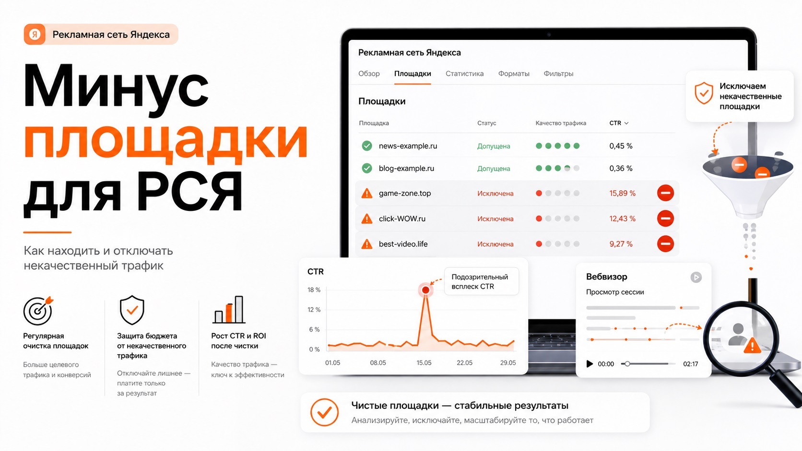

Блог о платном трафике
Минус площадки для РСЯ: готовый список и как чистить некачественный трафик
РСЯ может давать дешевые заявки и хорошо масштабироваться, но качество трафика сильно зависит от площадок, на которых показываются объявления.
В статистике регулярно появляются мобильные приложения, игры, внешние рекламные сети и сайты, которые дают много кликов, высокий CTR, но практически не дают нормальных конверсий.
Минус площадки для РСЯ - это не список, который один раз добавили в кампанию и забыли. Такой список можно использовать как стартовую базу, но площадки постоянно меняются. Некачественный трафик приходится отслеживать регулярно.

Готовый список минус площадок для РСЯ
Начать проверку можно с этих площадок:
com.fugo.wow
dsp-betweenx.yandex.ru
dsp-blueseax.yandex.ru
dsp-huawei.yandex.ru
dsp-inneractive.yandex.ru
dsp-ironsource.yandex.ru
dsp-minimob-ww.yandex.ru
dsp-mintagral.yandex.ru
dsp-opera-exchange.yandex.ru
dsp-webeye.yandex.ru
dsp-yeahmobi.yandex.ru
dsp.yandex.ru
dsp-unityads.yandex.ru
dsp-xiaomi.yandex.ru
dsp-inmobi.yandex.ru
dsp-start-io.yandex.ru
budu5.com
superaura.ru
jp.co.goodroid.hyper.nutsandboltssort
ferp.android
se.raketspel.digaround
ru.innim.my_finance
limehd.ru.ctv
m.pogodaЭто не универсальный черный список, а список для первичной проверки. Если площадка есть здесь, это еще не означает, что ее нужно автоматически отключить во всех проектах. В одной тематике она может сливать бюджет, а в другой неожиданно приносить нормальные конверсии.
Отдельно обращаю внимание на названия с элементами vpn, dsp, jewel, gdz, paint, coloring, antivirus, games, game, puzzle, solitaire, sudoku, mahjong, minecraft, mods, bubble, jigsaw, tile, cards, match, water, sort, word, race, battle, manga, apps, app, video, tv, limehd, photostrana, mamba, getcontact, nekto, aerovpn, lihuhu, linkdesks.
Это маркеры, по которым удобно искать подозрительные сайты и приложения в отчете, а не значения для бездумной загрузки в список запрещенных площадок. Особенно внимательно проверяю игры, головоломки, раскраски, VPN-приложения, развлекательные сервисы и мобильные приложения с очень высоким количеством случайных кликов.
Почему готовый список минус площадок быстро устаревает
В РСЯ постоянно появляются новые приложения, сайты, рекламные партнеры и идентификаторы приложений. Поэтому схема «скачал список, вставил его и больше ничего не делаю» практически не работает.
Рабочий подход другой:
- Добавить стартовый список очевидно подозрительных площадок.
- Запустить рекламу.
- Регулярно смотреть фактический трафик.
- Находить аномалии.
- Проверять поведение пользователей.
- Только после этого отключать площадки.
Где посмотреть площадки РСЯ
Я обычно анализирую их через статистику Яндекс Директа. Нужен разрез по названию площадки: в актуальном интерфейсе для этого есть отдельный отчет «Площадки», также площадки можно анализировать через Мастер отчетов.
По каждой площадке в первую очередь смотрю расход, клики, CTR, конверсии, CPA, количество отказов, глубину просмотра и время на сайте. Но отдельно взятая метрика редко дает достаточно информации.
Основной вопрос всегда один: приносит ли эта площадка нормальные целевые действия по адекватной стоимости? Стоимость целевого действия и принцип расчета CPA разбираю в статье CPA в Яндекс Директе: что это и как считать стоимость конверсии.
Слишком высокий CTR в РСЯ - подозрительный сигнал
На поиске высокий CTR обычно воспринимается положительно. В РСЯ логика другая: человек не вводил запрос прямо сейчас, а смотрит сайт, читает статью, использует приложение или играет.
Если вижу CTR выше 15%, такую площадку почти всегда проверяю отдельно. Это не означает, что ее обязательно нужно отключать. Это означает, что нужно посмотреть трафик вручную.
| Площадка | CTR | Конверсии | Что делать |
|---|---|---|---|
| site-a.ru | 0,8% | 12 | Оставить |
| app-b | 2,3% | 5 | Оставить и наблюдать |
| game-c | 17,6% | 0 | Проверить |
| puzzle-d | 28,4% | 0 | Проверить в первую очередь |
Высокий CTR может возникать из-за расположения рекламного блока, особенностей приложения или большого количества случайных нажатий. Задача рекламы - не получить максимум кликов, а получить целевые действия по нужной цене.
Обязательно смотрите Вебвизор
Когда цифры выглядят странно, один из самых полезных инструментов - Вебвизор Яндекс Метрики. Допустим, площадка показывает CTR 22%, 300 переходов, почти нулевое время на сайте и ни одной заявки. Открываю визиты с этой площадки и смотрю, что реально происходит.
Подозрительно, когда пользователь:
- заходит и мгновенно закрывает страницу;
- вообще ничего не делает;
- совершает множество странных быстрых действий;
- попадает на сайт и сразу возвращается назад;
- кликает так, будто переход произошел случайно.
Если таких визитов десятки и картина повторяется, это намного более сильный аргумент для отключения площадки, чем один высокий CTR.
Не отключайте площадку по двум кликам
Площадка с тремя кликами и без конверсий еще не дает основания для вывода. Если обычная конверсия сайта составляет 3%, отсутствие заявки после 10 переходов вообще ничего необычного не означает.
В первую очередь смотрю на площадки, которые уже успели потратить заметную относительно целевого CPA сумму. Если нормальная заявка стоит 1500 рублей, а площадка уже потратила 4000-5000 рублей без одной нормальной конверсии, это намного более весомый сигнал.
На какие показатели смотреть при чистке РСЯ
Нет правила «если один показатель выше X, площадку отключаем». Я смотрю на комбинацию факторов.
Расход без конверсий
Если площадка системно расходует бюджет и не дает целевых действий, нужно разбираться.
Стоимость конверсии
Площадка может давать заявки, но в три раза дороже среднего. Тогда вопрос уже не в количестве конверсий, а в их цене.
CTR
CTR значительно выше остальных площадок - повод открыть статистику подробнее. Особенно внимательно отношусь к CTR выше 15%.
Поведение пользователей
Смотрю Вебвизор, отказы, глубину просмотра и время на сайте.
Качество самих заявок
Это самый важный уровень. Площадка может показывать много конверсий и низкий CPA, но отдел продаж сообщает, что все заявки мусорные. Реклама должна оцениваться не только по отправкам формы, но и по качеству лидов.
Почему нельзя оценивать площадки только по отказам
Высокий показатель отказов - плохой автоматический критерий для отключения. Пользователь может зайти на лендинг, увидеть предложение, оставить телефон и закрыть страницу. Для бизнеса это идеальный визит.
Сначала смотрим бизнес-результат: конверсии → CPA → качество лидов. Поведенческие метрики нужны уже для диагностики.
Важно правильно настроить цели
Чистить площадки бессмысленно, если Метрика неправильно считает конверсии. Если основной целью выбран обычный клик по кнопке вместо успешной отправки формы, площадка может казаться эффективной только из-за случайных нажатий.
Перед анализом РСЯ проверяю, что основные цели фиксируют нужные действия. Как это сделать, показал в инструкции как проверить цель в Яндекс Метрике. Для сайтов на Tilda есть отдельная инструкция по настройке целей Яндекс Метрики на Tilda.
Как я чищу площадки РСЯ
- Открываю отчет по площадкам. Выбираю нужную кампанию и достаточный период статистики.
- Сортирую площадки по расходу. Сначала разбираю те, на которые ушло больше всего денег.
- Проверяю конверсии и CPA. Сравниваю площадку со средней стоимостью целевого действия по кампании.
- Ищу аномальный CTR. Площадки с CTR выше 15% отправляю на дополнительную проверку.
- Смотрю Метрику и Вебвизор. Проверяю реальные визиты и поведение пользователей.
- Проверяю качество лидов. Если есть CRM или обратная связь от отдела продаж, смотрю не только количество заявок, но и их качество.
- Отключаю только то, что действительно мешает. После этого площадка отправляется в исключения.
Нужно ли отключать все мобильные приложения
Нет. В некоторых проектах приложения действительно дают много случайных кликов, в других - приносят заявки по нормальной цене. Поэтому com.*, game, app, puzzle и похожие элементы - прежде всего повод проверить площадку, а не универсальное правило блокировки.
Можно ли один раз добавить большой blacklist
Можно добавить базовый список, но проблему это не решает. Даже если сегодня отключить 200 плохих площадок, через некоторое время в статистике появятся новые.
Задача не в том, чтобы собрать максимально большой blacklist. Задача - убрать конкретные источники, которые портят экономику кампании. Если вы только разбираетесь, чем РСЯ отличается от поисковой рекламы, сначала прочитайте как работает Яндекс Директ.
Главное правило при работе с минус площадками
Готовый список полезен только как отправная точка. Нормальная чистка РСЯ выглядит так:
площадка → статистика → CTR → конверсии → Вебвизор → качество лидов → решение.
Не стоит отключать площадку только потому, что кто-то добавил ее в список в интернете. Но если она одновременно расходует заметный бюджет, имеет подозрительно высокий CTR, не дает нормальных конверсий, показывает странное поведение пользователей и приводит некачественные заявки - оснований для отключения уже достаточно.
Частые вопросы
Что такое минус площадки в РСЯ?
Это сайты и приложения, на которых рекламодатель запрещает показы своих объявлений из-за низкой эффективности или плохого качества трафика.
Где найти площадки РСЯ?
В Яндекс Директе можно использовать отчет «Площадки» или Мастер отчетов с группировкой по названию площадки.
Какой CTR считается слишком высоким для РСЯ?
Универсального значения нет. В своих проектах CTR выше 15% считаю поводом внимательно проверить площадку, статистику и визиты через Вебвизор.
Нужно ли отключать все игровые приложения?
Нет. Игры и другие мобильные приложения стоит проверять особенно внимательно, но решение лучше принимать по фактическим конверсиям, CPA и качеству трафика.
Можно ли использовать готовый список минус площадок?
Да, как стартовую базу. Но он не заменяет регулярный анализ, потому что новые площадки появляются постоянно.
Как часто проверять площадки РСЯ?
При активных кампаниях - регулярно, особенно при росте расхода, CPA, необычном CTR или ухудшении качества заявок.